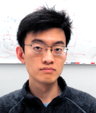

Kailai LiDivision of Automatic Control, Department of Electrical Engineering, Linköping University, Sweden Contact: kailai.li [at] liu [dot] se Google Scholar / Github / LinkedIn / ORCID / Twitter / ResearchGate |
 |
{kind=link}
I am now available for faculty position starting 2024.
Short Bio
I am a postdoctoral fellow working at the Department of Electrical Engineering in collaboration with Fredrik Gustafsson at Linköping University (LiU) in Sweden from October 2022. I was a postdoctoral researcher at the Intelligent Sensor-Actuator-Systems (ISAS) Lab, Institute for Anthropomatics and Robotics, Karlsruhe Institute of Technology (KIT) in Germany, where I obtained my PhD degree in computer science in December 2021 under the supervision of Uwe D. Hanebeck. Previously, I received my master's degree in Automation Engineering in 2017 from RWTH Aachen University in Germany, including a master's thesis completed at ETH Zurich in Switzerland, and my bachelor's degrees in 2014 from Tsinghua University (Wikipedia) in China.
Research Profile
My major research interests include probabilistic modeling and state estimation in the general domain of understanding physical and cyber-physical systems, with applications to sensor fusion, robotic perception, and learning dynamical systems. I am also interested in developing planning and control methods for uncertain dynamical systems and have the ambition to methodologically unify these aspects through new representations and models with real-world validation. I had the honor to lead the developments of a few open-source real-world robotic systems, including LiLi-OM, a cross-hardware LiDAR-inertial odometry and mapping system, and SFUISE, a continuous-time UWB-inertial state estimation system. Please refer to the lists of papers and talks below for more information.
Over the years, I have been very lucky to cooperate with many students as a teacher and supervisor. I also have the gratitude to provide regular academic services to a few major conferences in robotics, control and information fusion. I have been experienced in writing research grant proposals through a few applications for projects with my advisors.
Teaching
-
TSRT78: Digital Signal Processing (since 2022)
Master’s level course at the Department of Electrical Engineering, Linköping University [link]
Examiner and lecturer. See also my self-written lecture manuscript [PDF] -
Localization of Mobile Agents (2019-2022)
Master’s level course at the Deparment of Informatics, Karlsruhe Institute of Technology
Teaching assistant for four consecutive years -
Seminar: Moderne Methoden der Informationsverarbeitung & Proseminar: Anthropomatik: Von der Theorie zur Anwendung (2017-2021)
Bachelor's and Master’s level seminars at the Deparment of Informatics, Karlsruhe Institute of Technology
Supervision at least one student for each kind per semester (twice a year) -
Projektpraktikum maschinelles Lernen und intelligente Systeme (2017-2021)
Master’s level practical course at the Deparment of Informatics, Karlsruhe Institute of Technology
Supervision at least two students (in group) per semester (twice a year)
Student Supervision
- @ Linköping University (ongoing)
- Ziyu Cao (incoming PhD student, co-supervised with Fredrik Gustafsson)
- Qihao Yuan (remote master's student)
- @ Karlsruhe Institute of Technology (previous)
- Supervisor of 15 students for bachelor’s and master’s theses (2018-2022) [full list]
- Supervisor of 2 students for a one-year master’s level research training program (2019-2020)
Preprints
-
On Embedding B-Splines in Recursive State Estimation
Kailai Li
arXiv preprint, arXiv:2307.00637 [arXiv] -
Gaussian Process on the Product of Directional Manifolds
Ziyu Cao, Kailai Li
arXiv preprint, arXiv:2303.06799 [arXiv] [code] -
Hyperspherical Dirac Mixture Reapproximation
Kailai Li, Florian Pfaff, Uwe D. Hanebeck
arXiv preprint arXiv:2110.10411 [arXiv]
Dissertation
-
On-Manifold Recursive Bayesian Estimation for Directional Domains
Kailai Li, PhD Thesis, Department of Informatics, Karlsruhe Institute of Technology, December 2021 [PDF]
Graded with highest distinction (summa cum laude)
Peer-Reviewed Publications
-
Weighted Total Least Squares for Quadratic Errors-in-Variable Regression
Peng Liu, Kailai Li, Gustaf Hendeby, Fredrik Gustafsson
Proceedings of the 2023 31st European Signal Processing Conference (EUSIPCO), Helsinki, Finland (Accepted) -
Continuous-Time Ultra-Wideband-Inertial Fusion
Kailai Li, Ziyu Cao, Uwe D Hanebeck
IEEE Robotics and Automation Letters, vol. 8, no. 7, pp. 4338-4345, July 2023 [arXiv] [IEEE] [video] [code and data] -
Optimal Sensor Placement for Multilateration Using Alternating Greedy Removal and Placement
Daniel Frisch, Kailai Li, Uwe D Hanebeck
Proceedings of the 2022 IEEE International Conference on Multisensor Fusion and Integration for Intelligent Systems (MFI), Cranfield, United Kingdom [IEEE] -
The State Space Subdivision Filter for SE(3)
Florian Pfaff, Kailai Li, Uwe D Hanebeck
Proceedings of the 2022 25th International Conference on Information Fusion (FUSION), Linköping, Sweden [IEEE] -
Circular Discrete Reapproximation
Kailai Li, Florian Pfaff, Uwe D. Hanebeck
Proceedings of the 2022 25th International Conference on Information Fusion (FUSION), Linköping, Sweden [IEEE]
International Society for Information Fusion (ISIF) Jean-Pierre Le Cadre Best Paper Award: First Runner-Up -
Conditional Densities and Likelihoods for Hypertoroidal Densities Based on Trigonometric Polynomials
Florian Pfaff, Kailai Li, Uwe D. Hanebeck
Proceedings of the 2021 IEEE International Conference on Multisensor Fusion and Integration for Intelligent Systems (MFI), Karlsruhe, Germany [IEEE] -
Deep Likelihood Learning for 2-D Orientation Estimation Using a Fourier Filter
Florian Pfaff, Kailai Li, Uwe D. Hanebeck
Proceedings of the 24th International Conference on Information Fusion (FUSION), Sun City, South Africa [IEEE] [code] -
The State Space Subdivision Filter for Estimation on SE(2)
Florian Pfaff, Kailai Li, Uwe D. Hanebeck
Sensors 2021, 21(18), 6314 [MDPI] -
Towards High-Performance Solid-State-LiDAR-Inertial Odometry and Mapping
Kailai Li, Meng Li, Uwe D. Hanebeck
IEEE Robotics and Automation Letters, vol. 6, no. 3, pp. 5167-5174, July 2021 [arXiv] [IEEE] [video] [code and data] -
Progressive von Mises–Fisher Filtering Using Isotropic Sample Sets for Nonlinear Hyperspherical Estimation
Kailai Li, Florian Pfaff, Uwe D. Hanebeck
Sensors 2021, 21(9), 2991 [MDPI] -
Unscented Dual Quaternion Particle Filter for SE(3) Estimation
Kailai Li, Florian Pfaff, Uwe D. Hanebeck
IEEE Control Systems Letters, vol. 5, no. 2, pp. 647-652, April 2021 & 2020 59th IEEE Conference on Decision and Control (CDC), Jeju, South Korea [IEEE] -
Nonlinear von Mises–Fisher Filtering Based on Isotropic Deterministic Sampling
Kailai Li, Florian Pfaff, Uwe D. Hanebeck
Proceedings of the 2020 IEEE International Conference on Multisensor Fusion and Integration for Intelligent Systems (MFI), Karlsruhe, Germany [IEEE] -
Estimating Correlated Angles Using the Hypertoroidal Grid Filter
Florian Pfaff, Kailai Li, Uwe D. Hanebeck
Proceedings of the 2020 IEEE International Conference on Multisensor Fusion and Integration for Intelligent Systems (MFI), Karlsruhe, Germany [IEEE] -
Optimal Reduction of Dirac Mixture Densities on the 2-Sphere
Daniel Frisch, Kailai Li, Uwe D. Hanebeck
IFAC-PapersOnLine, vol. 53, no. 2, pp. 1282-1287, 2020 & 21st IFAC World Congress, Berlin, Germany [ScienceDirect] -
The Spherical Grid Filter for Nonlinear Estimation on the Unit Sphere
Florian Pfaff, Kailai Li, Uwe D. Hanebeck
IFAC-PapersOnLine, vol. 53, no. 2, pp. 2354-2360, 2020 & 21st IFAC World Congress, Berlin, Germany [ScienceDirect] -
Improved Pose Graph Optimization for Planar Motions Using Riemannian Geometry on the Manifold of Dual Quaternions
Kailai Li, Johannes Cox, Benjamin Noack, Uwe D. Hanebeck
IFAC-PapersOnLine, vol. 53, no. 2, pp. 9541-9547, 2020 & 21st IFAC World Congress, Berlin, Germany [ScienceDirect] -
Hyperspherical Unscented Particle Filter for Nonlinear Orientation Estimation
Kailai Li, Florian Pfaff, Uwe D. Hanebeck
IFAC-PapersOnLine, vol. 53, no. 2, pp. 2347-2353, 2020 & 21st IFAC World Congress, Berlin, Germany [ScienceDirect] -
Dual Quaternion Sample Reduction for SE(2) Estimation
Kailai Li, Florian Pfaff, Uwe D. Hanebeck
Proceedings of the 2020 23rd International Conference on Information Fusion (FUSION), Rustenburg, South Africa [IEEE] [video] -
A Hyperhemispherical Grid Filter for Orientation Estimation,
Florian Pfaff, Kailai Li, Uwe D. Hanebeck
Proceedings of the 2020 23rd International Conference on Information Fusion (FUSION), Rustenburg, South Africa [IEEE] -
Highly Parallelizable Plane Extraction for Organized Point Clouds Using Spherical Convex Hulls
Hannes Möls, Kailai Li, Uwe D. Hanebeck
Proceedings of the 2020 IEEE International Conference on Robotics and Automation (ICRA), Paris, France [IEEE] [video] -
Grid-Based Quaternion Filter for SO(3) Estimation
Kailai Li, Florian Pfaff, Uwe D. Hanebeck
Proceedings of the 2020 European Control Conference (ECC), St. Petersburg, Russia [IEEE] -
Stereo Visual SLAM Based on Unscented Dual Quaternion Filtering
Simon Bultmann, Kailai Li, Uwe D. Hanebeck
Proceedings of the 2019 22nd International Conference on Information Fusion (FUSION), Ottawa, Canada [IEEE] [video] -
Hyperspherical Deterministic Sampling Based on Riemannian Geometry for Improved Nonlinear Bingham Filtering
Kailai Li, Florian Pfaff, Uwe D. Hanebeck
Proceedings of the 2019 22nd International Conference on Information Fusion (FUSION), Ottawa, Canada [IEEE] -
Fourier Filters, Grid Filters, and the Fourier-Interpreted Grid Filter
Florian Pfaff, Kailai Li, Uwe D. Hanebeck
Proceedings of the 2019 22nd International Conference on Information Fusion (FUSION), Ottawa, Canada [IEEE] -
Geometry-Driven Deterministic Sampling for Nonlinear Bingham Filtering
Kailai Li, Daniel Frisch, Benjamin Noack, Uwe D. Hanebeck
Proceedings of the 2019 European Control Conference (ECC), Naples, Italy [IEEE] -
Geometry-Driven Stochastic Modeling of SE(3) States Based on Dual Quaternion Representation
Kailai Li, Florian Pfaff, Uwe D. Hanebeck
Proceedings of the 2019 IEEE International Conference on Multisensor Fusion and Integration for Intelligent Systems (MFI), Taipei, Taiwan [IEEE] -
Comparative Study of Track-to-Track Fusion Methods for Cooperative Tracking with Bearings-only Measurements
Susanne Radtke, Kailai Li, Benjamin Noack, Uwe D. Hanebeck
Proceedings of the 2019 IEEE International Conference on Multisensor Fusion and Integration for Intelligent Systems (MFI), Taipei, Taiwan [IEEE] -
Association Likelihoods for Directional Estimation
Florian Pfaff, Kailai Li, Uwe D. Hanebeck
Proceedings of the 2019 IEEE International Conference on Multisensor Fusion and Integration for Intelligent Systems (MFI), Taipei, Taiwan [IEEE] -
Variable Step-Size Discrete Dynamic Programming for Vehicle Speed Trajectory Optimization
Ziqi Ye, Kailai Li, Michael Stapelbroek, Rene Savelsberg, Marco Günther, Stefan Pischinger
IEEE Transactions on Intelligent Transportation Systems, vol. 20, no. 2, pp. 476-484, Feb. 2019 [IEEE] -
Nonlinear Progressive Filtering for SE(2) Estimation
Kailai Li, Gerhard Kurz, Lukas Bernreiter, Uwe D. Hanebeck
Proceedings of the 2018 21st International Conference on Information Fusion (FUSION), Cambridge, United Kingdom [IEEE] -
Simultaneous Localization and Mapping Using a Novel Dual Quaternion Particle Filter
Kailai Li, Gerhard Kurz, Lukas Bernreiter, Uwe D. Hanebeck
Proceedings of the 2018 21st International Conference on Information Fusion (FUSION), Cambridge, United Kingdom [IEEE] -
Wavefront Orientation Estimation Based on Progressive Bingham Filtering
Kailai Li, Daniel Frisch, Susanne Radtke, Benjamin Noack, Uwe D. Hanebeck
Proceedings of the 2018 IEEE ISIF Workshop on Sensor Data Fusion: Trends, Solutions, Applications (SDF), Bonn, Germany [IEEE]
2023
2022
2021
2020
2019
2018
Academic Services
-
Review for conferences
IEEE International Conference on Robotics and Automation (ICRA 2022 & 2023)
IEEE/RSJ International Conference on Intelligent Robots and Systems (IROS 2021)
IEEE Conference on Decision and Control (CDC 2023)
IEEE International Conference on Multisensor Fusion and Integration for Intelligent Systems (MFI 2019-2022)
Robotics: Science and Systems (RSS 2019)
European Control Conference (ECC 2019-2022)
IFAC World Congress (IFAC 2020 & 2023)
International Conference on Information Fusion (FUSION 2018-2023)
-
Review for journals
IEEE Robotics and Automation Letters (comparably more regular with more than 10 paper)
IEEE Control Systems Letters
IEEE Transactions on Pattern Analysis and Machine Intelligence
IEEE Transactions on Automatic Control
IEEE Transactions on Intelligent Transportation Systems
IEEE Transactions on Aerospace and Electronic Systems
IEEE Journal of Indoor and Seamless Positioning and Navigation
Journal of Field Robotics
Statistics and Computing
- Program Committee
Co-organizing the Special Session on Directional Estimation at conferences FUSION (2018, 2019, 2020, 2022) and MFI (2020, 2021)
Invited Talks
-
On High-Performance Sensor Fusion
Mini-Workshop on: Magnetic Field Localisation, Combining Sensor Fusion with Machine Learning and Beyond
June 2023, Linköping University
Hosts: Prof. Gustaf Hendeby, Prof. Isaac Skog, Prof. Manon Kok
-
Towards Universal LiDAR Mapping
Security Link board meeting
February 2023, Linköping University
Host: Prof. Fredrik Gustafsson -
Towards High-Performance Solid-State-LiDAR-Inertial Odometry and Mapping
February 2022, Remote Sensing Laboratories, University of Zurich
Hosts: Prof. Meredith Christine Schuman, Dr. Felix Morsdorf -
Rigid Body Motion Estimation Based on Directional Statistics
Virtual Symposium on Directional Statistics
November 2020, Karlsruhe Institute of Technology [link] [video]
Projects
-
Gaussian Process Modeling on Directional Manifolds for Data-Driven Estimation of Rigid Body Motion (2021-2024)
Funded within the Individual Research Grant Program by the German Research Foundation (DFG), Germany [link]
Roles: Writing of the grant proposal. PI: Uwe D. Hanebeck -
ULearn4Mobility – Ubiquitous Spatio-Temporal Learning for Future Mobility (2021-2023)
Funded within the Helmholtz AI Project Program by the Helmholtz Association, Germany [link]
Roles: Writing of the grant proposal and project execution. PI: Uwe D. Hanebeck -
POMAS – Pose Estimation and Mapping Using Heterogeneous Sensor Networks (2020-2022)
Funded within the Software Campus Program by the Federal Ministry of Education and Research (BMBF), Germany [link]
Roles: Principle investigator (PI), full-cycle project management and partial execution
-
Recursive Estimation of Rigid Body Motions (2017-2020)
Funded within the Individual Research Grant Program by the German Research Foundation (DFG), Germany [link]
Project execution during PhD research. PI: Uwe D. Hanebeck
Awards
- 2022: Jean-Pierre Le Cadre Best Paper Award: First Runner-Up by the International Society for Information Fusion (ISIF) at FUSION 2022 [link]
- 2021: Best Lab Practical Course “Machine Learning and Intelligent System” by the Department of Informatics, Karlsruhe Institute of Technology [link]
- 2016 & 2017: IDEA League Research Grant [link]
- 2017: Dean's List RWTH Aachen for top 5% students with outstanding academic result
- 2014: DAAD Scholarship for RWTH-Tsinghua Strategic Partnership